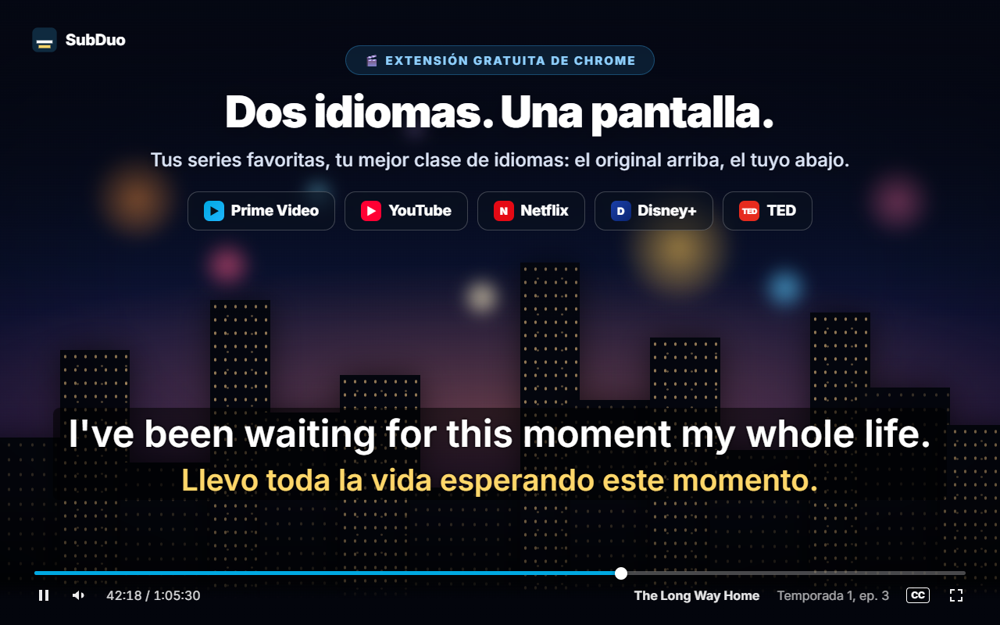
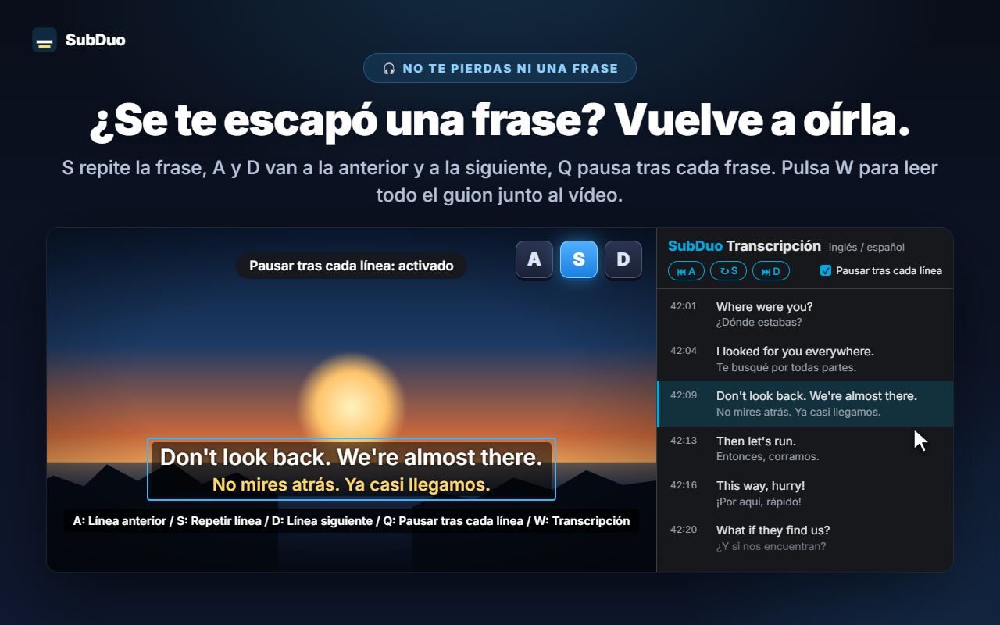
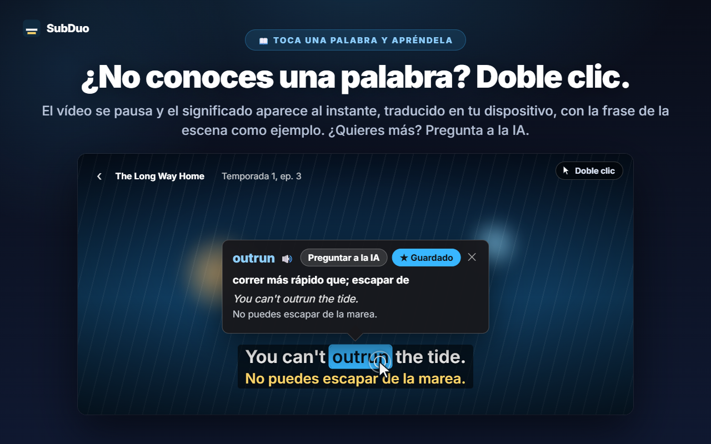
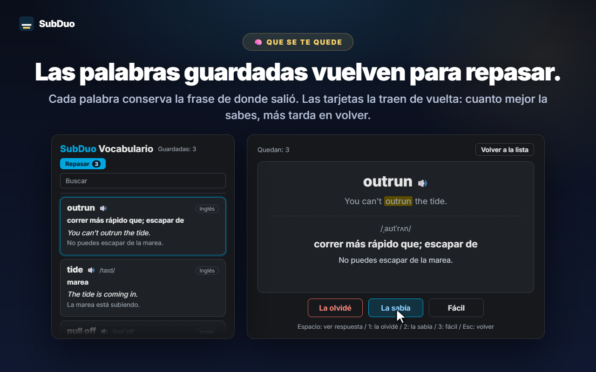

Dos idiomas de subtítulos cualesquiera
Todas las pistas que ofrece el sitio se detectan al reproducir el vídeo, incluidos los subtítulos automáticos de YouTube. Elige uno por línea u oculta una de las dos.
SubDuo muestra dos idiomas de subtítulos a la vez: el original arriba, el tuyo abajo. Haz doble clic en una palabra para ver qué significa, repite una línea con una sola tecla y guarda lo que aprendes en un vocabulario integrado.
Usa los subtítulos que cada sitio ya ofrece · Sin cuenta · Los subtítulos se quedan en tu navegador
Los reproductores de streaming muestran un solo idioma de subtítulos a la vez. SubDuo añade un segundo, y las herramientas para aprender con él.
Pantallas de la extensión, mostradas en tu idioma.

Elige dos de las pistas de subtítulos que ofrece el título: el original arriba, el tuyo abajo. Arrastra los subtítulos adonde quieras, gira la rueda sobre una línea para cambiar su tamaño y haz clic derecho para cambiar colores, transparencia o difuminado.

Pulsa S para repetir la línea, A y D para ir a la anterior o a la siguiente, y Q para pausar automáticamente tras cada línea. Pulsa W para abrir la transcripción en el panel lateral de Chrome —los dos idiomas, línea a línea— y haz clic en cualquier fila para saltar allí.

El vídeo se pausa y una tarjeta muestra al instante el significado, traducido en tu dispositivo por el traductor integrado de Chrome, con la propia línea de la escena como ejemplo. Alt+arrastrar selecciona una frase. Pulsa «Preguntar a la IA» para ver el significado en contexto, la pronunciación y una frase de ejemplo.

Cada palabra guardada conserva la línea de la que salió. Busca y filtra tu vocabulario, escucha la pronunciación y repasa con tarjetas: cuanto mejor conoces una palabra, más tarda en volver.
Sin cuenta ni pantallas de configuración. Instálalo y dale al play.
Instala SubDuo desde Chrome Web Store y reproduce un vídeo en Prime Video, YouTube, Netflix, Disney+ o TED.
Haz clic en el icono de SubDuo y elige un idioma de subtítulos para la línea superior y otro para la inferior. Solo aparecen las pistas que ofrece el título.
Haz doble clic en las palabras para consultarlas, pulsa A, S o D para repetir líneas y abre tu vocabulario desde el popup.
Pensada para quienes aprenden viendo y quieren que los subtítulos no estorben hasta que los necesitan.
Todas las pistas que ofrece el sitio se detectan al reproducir el vídeo, incluidos los subtítulos automáticos de YouTube. Elige uno por línea u oculta una de las dos.
Doble clic o Alt+clic en una palabra, o Alt+arrastrar sobre una frase. La reproducción se pausa y la traducción aparece sobre el vídeo, hecha en tu dispositivo.
El significado en contexto, la pronunciación y una frase de ejemplo, en tu idioma de interfaz. Hasta 20 explicaciones al día, gratis.
Guarda palabras con un clic, búscalas, fíltralas por idioma y escúchalas con 🔊. Las tarjetas espacian las palabras que ya conoces.
A para la línea anterior, S para repetir, D para la siguiente. Q pausa tras cada línea. Difumina una línea para ponerte a prueba y pasa el cursor por encima para comprobarlo.
Todas las líneas en ambos idiomas junto al vídeo. La línea actual se resalta; haz clic en cualquier fila para saltar a ella. Pulsa W para abrirla.
Arrastra para mover, rueda para cambiar el tamaño de una línea, flechas para ajustar, alineación a la izquierda, al centro o a la derecha. Clic derecho para el color, la transparencia y el difuminado de cada línea.
Subtítulos grandes en YouTube, discretos en Netflix: la configuración se guarda por sitio y se sincroniza con tu Chrome.
Los menús, las traducciones y las explicaciones de la IA usan el idioma de interfaz que elijas, que puede ser distinto del de Chrome.
SubDuo lee los archivos de subtítulos que cada sitio ya envía a tu navegador y los dibuja ahí mismo. Lo único que envía fuera es una frase sobre la que decides preguntar a la IA, junto con su línea de subtítulos.
Los subtítulos se procesan y se dibujan en tu navegador. Tu configuración, tu vocabulario y tu historial de visualización no se envían al desarrollador. Las palabras se traducen en tu dispositivo con el traductor integrado de Chrome.
Al pulsar «Preguntar a la IA», la frase seleccionada, su línea de subtítulos y la otra línea en pantalla, los códigos de idioma y un identificador aleatorio del dispositivo (para el límite diario) se envían al servidor de SubDuo, que pide la explicación a OpenAI. Tu dirección IP se procesa para operar el servicio.
No hay nada en lo que registrarse. La extensión no contiene publicidad ni analíticas.
«storage» para la configuración y el vocabulario, «scripting» para reconectar las pestañas abiertas tras una actualización, «sidePanel» para la transcripción y acceso solo a los cinco sitios compatibles.
Se instala desde Chrome Web Store en segundos